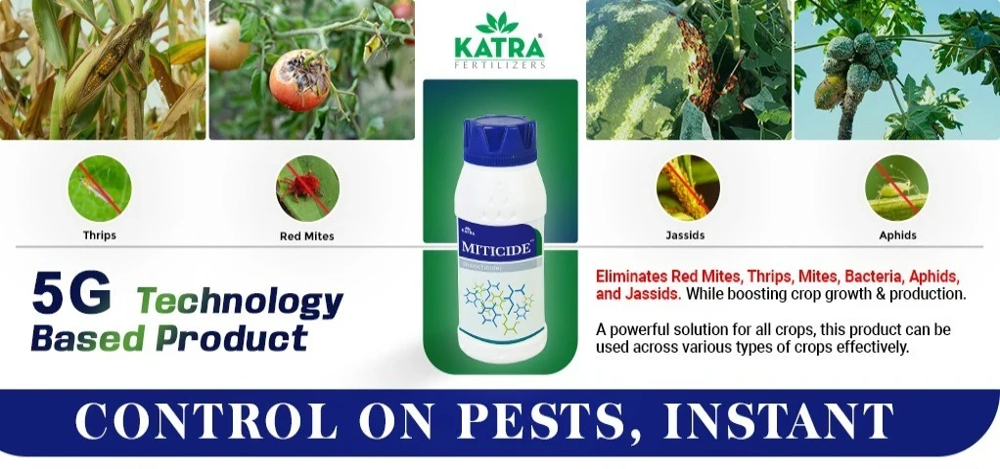
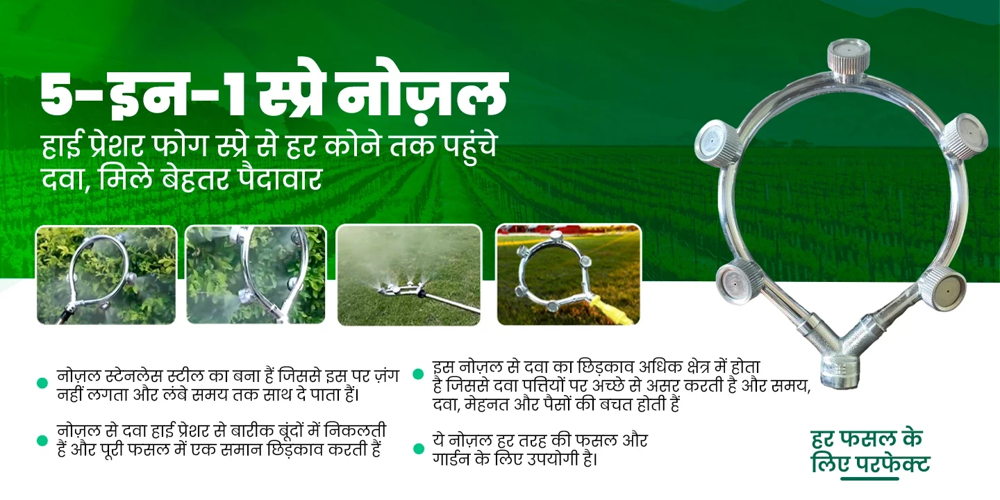

Overview
Kisan4U is an agricultural e-commerce platform connecting farmers directly with suppliers and buyers. Working in a fast-paced startup environment, I redesigned the platform to be intuitive and accessible — removing the friction that was preventing farmers from trusting and using online marketplaces.
The core challenge: design for users who are often first-time internet users, may have limited literacy, and come from low-connectivity rural environments. The solution needed to earn trust fast and make complex transactions feel simple.
Project Assets


Problem & Solution
The Problem
Farmers in rural India face significant barriers to entering online commerce: low digital literacy, distrust of unfamiliar interfaces, poor connectivity, and confusing navigation. The existing Kisan4U platform had dense information architecture, weak calls-to-action, and assumed a level of digital fluency that most target users did not have.
The Solution
A redesigned platform centred on clarity, trust signals, and progressive disclosure. Simplified navigation, icon-forward UI, stronger CTAs, regional language support considerations, and a streamlined checkout flow — all designed so a first-time user could complete a transaction confidently without assistance.
Research & Discovery
I conducted user research to uncover where farmers were dropping off and why. Through usability testing and stakeholder interviews, several recurring themes emerged:
- Users relied heavily on visual cues — icons, images, and colour — over text
- Trust signals (badges, reviews, verified seller marks) were critical before any purchase decision
- Navigation depth was a major barrier — users could not find products more than 2 taps deep
- The checkout process had too many steps and unfamiliar form fields
- Mobile experience was inconsistent, despite the majority of users being mobile-first
Key Insight
Farmers didn't distrust the internet — they distrusted complexity. Every extra step, every unexplained form field, every jargon-heavy label was a reason to abandon. The redesign had to remove doubt at every stage of the journey.
Design Decisions
Icon-first navigation with short text labels — reducing reliance on reading ability while maintaining clarity.
Prominent trust signals throughout: verified badges, seller ratings, and clear return policies on every product page.
Streamlined 3-step checkout replacing a 7-step form, reducing drop-off at the most critical conversion point.
Outcomes
The redesign delivered measurable improvements across key usability metrics observed in testing:
- Task completion rate improved significantly in moderated usability sessions
- Time-to-first-purchase was reduced through the simplified checkout flow
- Users expressed higher confidence in the platform, particularly around trust signals
- Navigation errors dropped as a result of the simplified information architecture
Learnings
Designing for a user group with different digital fluency than myself required constant humility. Every assumption I made about "obvious" interface patterns needed to be tested. The most impactful designs were often the simplest ones — a clear button, an honest badge, a picture instead of a paragraph.
Working in a fast-paced startup meant making confident decisions with incomplete information. I learned to anchor every design choice in a specific user observation rather than a general principle.